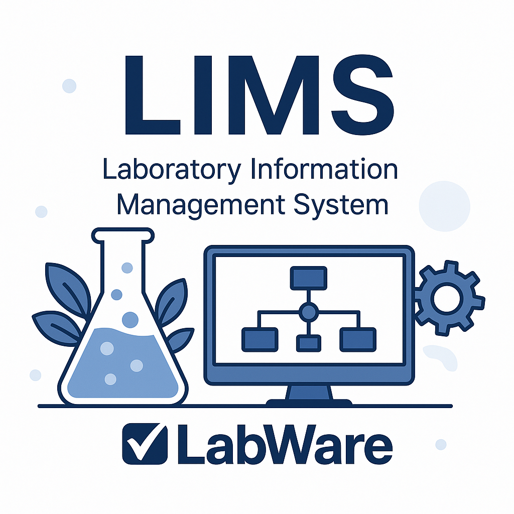

Over mij
Ik ben Eray Akyüz, een gedreven en analytisch ingestelde student met een achtergrond in de medische wetenschappen en een sterke interesse in technologie en netwerken.
Met mijn gecombineerde achtergrond in wetenschap en technologie streef ik ernaar om bruggen te slaan tussen technische precisie en praktische toepassingen in een professionele omgeving.
Mijn doel is om technische uitdagingen om te zetten in stabiele, efficiënte en gebruiksvriendelijke oplossingen.
Dankzij mijn verantwoordelijkheidsgevoel, doorzettingsvermogen en interesse in continue verbetering kan ik zowel zelfstandig als in teamverband sterk presteren binnen een professionele IT-omgeving.
Ervaring
Laboratory Information Management System

Het laboratorium waar ik als student werk maakt gebruik van het LIMS-systeem LabWare, waarmee alle testen, stalen, traceerbaarheid en rapportages centraal werden beheerd.
Hierdoor leerde ik werken binnen een sterk gedigitaliseerde kwaliteitsomgeving waar dataintegriteit en procesautomatisatie essentieel zijn.
Daarnaast draaide de IT-infrastructuur van het labo voor een groot deel op VMWare-virtualisatie, wat mij een extra inzicht gaf in hoe laboratoriumsoftware ondersteund wordt door moderne infrastructuurtechnologie.
Door deze combinatie van laboratoriumwerk en technische infrastructuurervaring ontwikkelde ik niet alleen analytische nauwkeurigheid, maar ook een scherp inzicht in hoe kritische softwaresystemen zoals LIMS functioneren binnen een professionele bedrijfsomgeving.